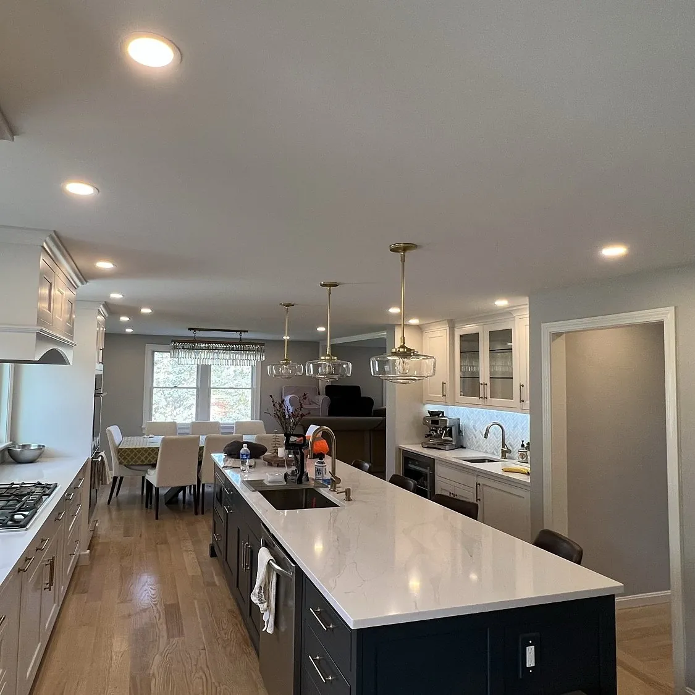
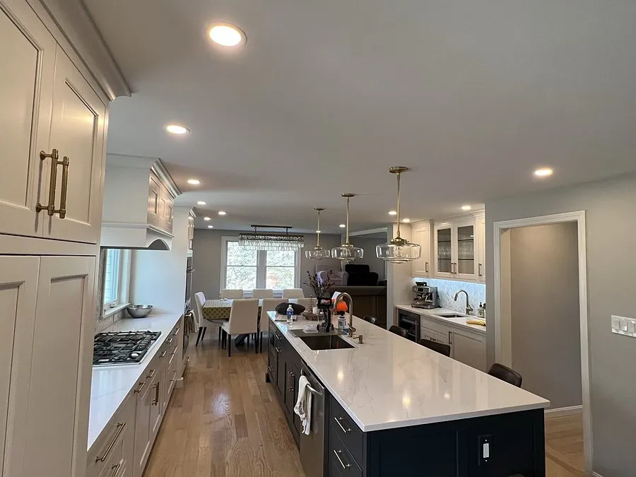
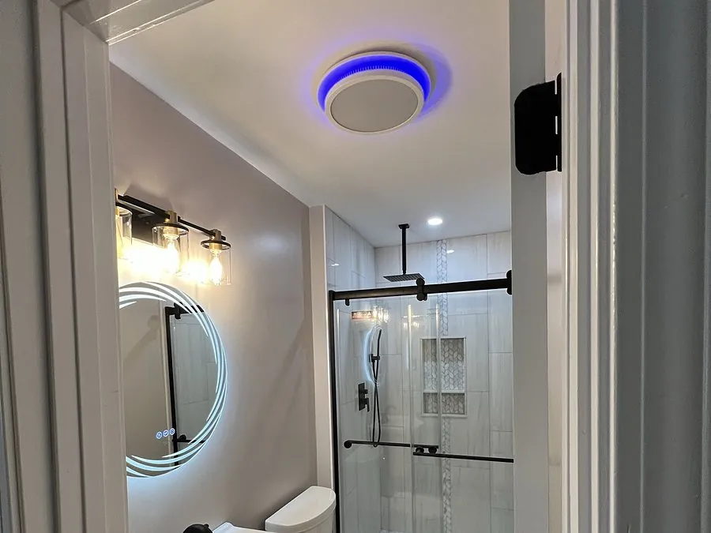

North Shore, MA
Bright, even light without a single fixture hanging in the way. We plan and install recessed and can lights in kitchens, living rooms, basements and bedrooms across Danvers and the North Shore, in new and existing ceilings, with the right dimmer for every room.

What's Included
One ceiling light in the middle of a room leaves the corners dark and throws shadows right where you work. A planned layout of recessed lights spreads the light evenly, makes low ceilings feel taller and gives an older home a clean, modern look. Every job is done by a licensed Massachusetts electrician, on the right circuit and to code.
Real Jobs, Real Photos


It's the first question almost everyone asks, and the honest answer is that it depends on what's above your ceiling. Two rooms that look the same from below can be very different jobs once you account for the framing, the insulation and how far the nearest circuit is.
The things that move the price the most are the number of lights, the type of ceiling (drywall, plaster or a drop ceiling), whether there is attic access above the room, whether the existing circuit can carry the new lights or a new circuit is needed, the type of fixture you choose and any dimmers or smart switches you want.
That's why we don't publish a one size fits all number. We come out, look at the room and hand you a free written estimate with the exact layout and the exact price before any work starts. No guesswork over the phone, no surprises at the end.
Most of our recessed lighting jobs are in finished rooms, not new construction. Under a second floor or in a ranch without attic space, there is no way to work from above, so we work from below: we cut each opening to the exact size of the fixture and fish new wiring through the joist bays with as few extra openings as possible.
Older North Shore homes often have plaster and lath ceilings, tight framing and wiring from another era. We pick fixtures and routes that respect the ceiling you have, and if we need an access hole to get a wire across a joist, we leave the patch clean and ready for paint.
Before we cut anything, we check the existing circuit. If it's already loaded with other lights and outlets, we tell you and plan a new circuit so the lights never trip a breaker. When a bigger job is involved, it can be handled together with a panel or service upgrade.
Traditional can lights use a metal housing that sits above the ceiling, with a trim and a bulb or LED module below. They're a great choice in new construction or when there's plenty of space above the ceiling, and they make it easy to change trims later.
Canless LED wafer lights are thin, flat fixtures with a small junction box that sits beside them. They need very little depth, which makes them ideal under floors, in basements full of ductwork and anywhere framing is tight. Many models let you pick the color of the light with a small switch, from warm white to a cooler daylight, and versions rated for contact with insulation are available where the location requires it.
There is no single right answer. During the estimate we look at your ceiling and recommend the option that fits it best, and we explain why.
Kitchens. Light the work surfaces, not just the middle of the room. We place recessed lights over the counters so you don't stand in your own shadow while you cook, and we can pair them with under-cabinet lights for a finished look. A common starting point is to space lights about half the ceiling height apart, then adjust for cabinets, the island and the range hood.
Basements. Low ceilings and ductwork make basements feel dark. More lights at a lower output, often canless wafers, make the space feel bright and usable. If your basement has a drop ceiling, we use fixtures made for suspended ceiling tiles so nothing sags or overheats.
Living rooms and bedrooms. Here the goal is comfort. We keep the light warm and add a dimmer, so the same room works for movie night and for cleaning day. We also keep lights out of your direct line of sight from the couch and the bed, so there's no glare.
If you already have can lights with old incandescent or halogen bulbs, you don't need to tear out the ceiling. In many cases we can install an LED retrofit trim right into the existing housing: it screws into the old socket or connects to the fixture, uses a fraction of the energy, runs cooler and lasts for many years.
If the old housings are damaged, rusted or not rated for the location, we replace them with new LED fixtures instead. Either way, we check the connections and the dimmer, because old dimmers often flicker or buzz with LED lights. Pairing the new lights with a compatible LED dimmer fixes that.
Switching to LED is also a good moment to rethink the layout. If a room has always felt dark in one corner, we can add a light or two on the same circuit while we're there, so you get the upgrade and the better light in one visit.
How It Works
We look at your setup and tell you what you actually need, in plain English. Always free.
A fixed price in writing before any work, with the permit plan included. No surprises.
On-time, to-code work, inspected and cleaned up before we leave.
Good to Know
It depends on the number of lights, the ceiling type, attic access and whether a new circuit is needed. Instead of guessing over the phone, we come out and give you a free written estimate with the exact layout and price before any work starts.
Yes. Most of our jobs are in finished ceilings with no attic above. We work from below through the fixture openings and keep any extra access holes small, then leave the patches clean and ready for paint.
Electrical work in Massachusetts is required to be done by a licensed electrician, and new wiring and circuits generally need an electrical permit from your town. We pull the permit when the job requires one and have the work inspected.
Yes. In many cases an LED retrofit trim fits right into the existing can. If the old housings are damaged or not rated for the location, we replace them with new LED fixtures.
A common starting point is spacing the lights about half the ceiling height apart and focusing them over the counters. The right number depends on your layout, so we sketch a plan during your free estimate.
Yes. Drop ceilings use fixtures made for suspended tiles, and finished basements are a great fit for thin canless LED wafers that need very little space above the ceiling.
Where We Work
We install recessed lighting all over the North Shore, from homes near downtown Danvers to mid-century houses in Peabody and historic homes in Beverly. Prefer a decorative fixture instead? See our light fixture installation page.
More From Julio
Get a free, no-pressure estimate today. Licensed, insured and always on time.